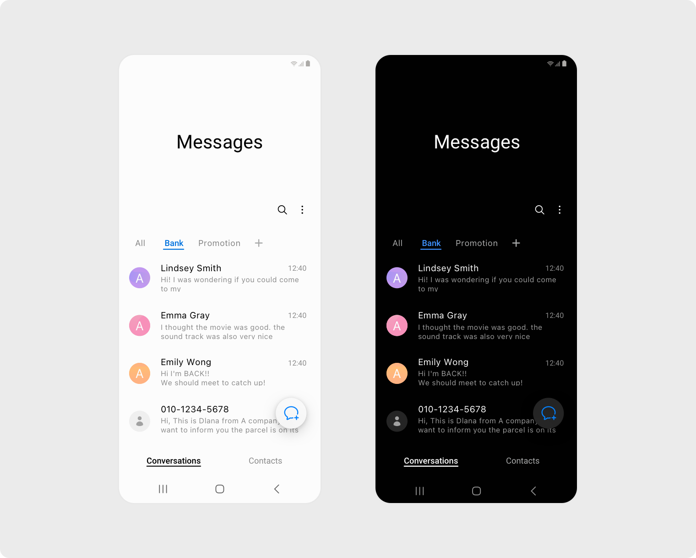
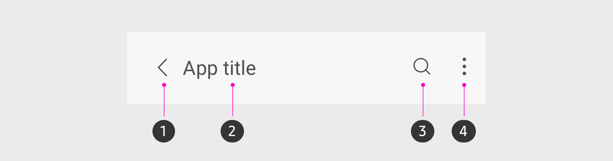
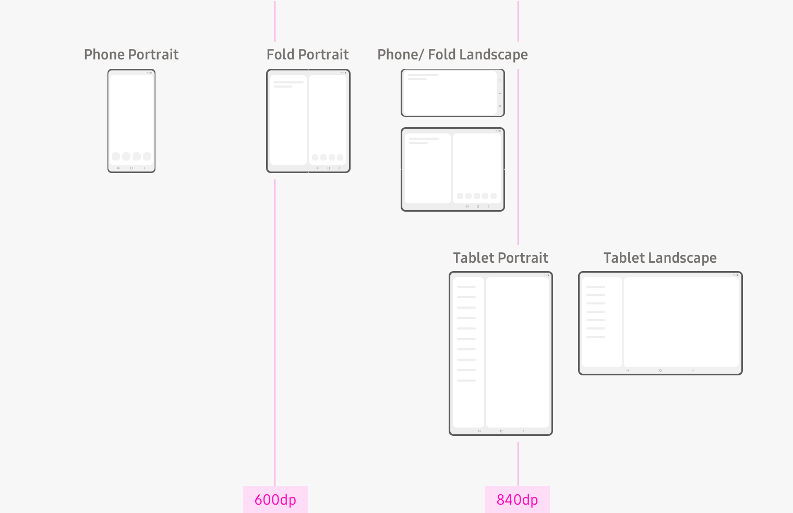
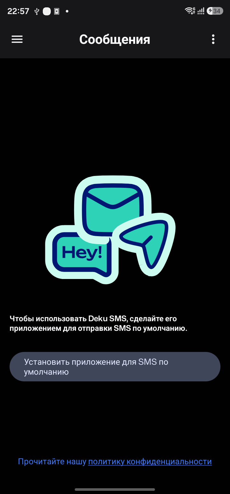

Messages, rebuilt for One UI
A Compose-native migration strategy for a secure SMS messenger: calm, reachable, adaptive, and free of protocol leakage.
Use SESL as a reference, not a dependency
Implement the production interface with Compose Material 3/Foundation plus app-owned One UI tokens and primitives.
`oneui-design` and `sesl-androidx` are permissively licensed and visually relevant, but are View/XML-oriented, require authenticated GitHub Packages, replace core AndroidX modules, and currently target a newer toolchain than this app. Pulling them in would trade visual convenience for build and maintenance risk.
Target experience
One-handed hierarchy
A large collapsible title occupies the upper viewing zone. Search, content and primary actions sit lower, within reach. Chat stays condensed so messages retain vertical space.
Invisible machinery
The UI understands messages, attachments and secure-session states—not SmsManager, frames, chunks, ports, ACK/NACK or ratchet internals.
Honest security
Ciphertext is never a fallback. Key mismatch and decrypt failure become clear recovery events with “Request a new key” and identity verification.
One attachment, one entity
A photo, voice note or file remains one timeline item while preparing, waiting, sending, paused, verifying, failed or complete.
Official One UI Messages reference

Samsung Developer documentation. Research reference only; do not ship this asset.
App-bar anatomy

Back, title, primary action, more. Extended titles collapse as content scrolls.
Adaptive panes

List/detail from 600 dp; expanded treatment at 840 dp.
Current-state evidence

Captured from the connected SM-S918B. Old product name, oversized illustration, visually weak CTA, and no progressive role/permission flow.
Structural diagnosis
- About 10k lines in the principal UI surface.
- Several 600–1,150 line screen/component files.
- Material 2 and Material 3 mixed in the same component layer.
- Composables/ViewModels access Telephony, preferences, databases, crypto and transfer infrastructure.
- Theme lives in stale `com.example.*` packages and defaults dynamic colour on.
- Attachment bubbles inspect transfer storage/chunk state directly.
Audit classification
| Class | What | Outcome |
|---|---|---|
| KEEP | Paging/Room foundation, established E2EE and attachment protocol, localisation foundation, useful route set | Preserve behaviour behind repositories and services. |
| REWRITE | Onboarding, thread list, chat, composer, bubbles, attachments, security, contact details, media, search, settings, theme | New stateless Compose screens and app-owned primitives. |
| REMOVE | Cyberpunk image, duplicate vendor launcher resources, Material 2 remnants, raw crypto/control rendering, ad-hoc tokens, stale theme packages | Delete after replacement paths are proven. |
| MOVE TO DOMAIN | SmsManager/Telephony, EncryptionController, AttachmentManager/chunks, database calls, preference writes, media playback, date/SIM/status computation | Expose commands and immutable UI models through `MessageService` and presentation controllers. |
Architecture boundary
Compose UI
↓ UserIntent / immutable UiState
Presentation ViewModels
↓ application commands + Flow
MessageService facade
├─ ConversationService
├─ AttachmentService
├─ SecureSessionService
└─ SettingsService
↓
Domain → Transport / Room / Telephony / Crypto / Files
Design tokens
| Layer | Specification |
|---|---|
| Colour | Quiet `#F7F7F7` / true black backgrounds; white / `#151515` surfaces; restrained accessible blue accent. Dynamic colour is opt-in and accent-only. |
| Type | Platform sans, no proprietary Samsung font. 36–40 sp expanded title, 20 sp compact title, 16–17 sp body, 12–13 sp metadata. Works at 200%. |
| Spacing | 4, 8, 12, 16, 20, 24, 32, 48 dp. Minimum 48 dp touch targets. |
| Shapes | 24–28 dp groups, 28–32 dp sheets, 24 dp composer, 18–20 dp message bubbles with a tighter speaker-side corner. |
| Motion | 100–140 ms feedback, 180–220 ms content state, 260–320 ms surfaces/navigation; reduced-motion aware. |
Migration sequence
- Foundation: UI models, facade, theme, tokens and primitives.
- Shell/onboarding: SMS role, permissions and import states.
- Conversation list/search: large title, paging, filters and selection.
- Chat/composer: grouped bubble family and delivery states.
- Attachments/voice: sheet, preview, recording/playback and one-entity transfers.
- Security: identity, key exchange and recovery without raw protocol content.
- Contact/media/settings: grouped One UI surfaces.
- Adaptive, accessibility and performance hardening.
Acceptance gates
- No Telephony, ratchet controller, frame/chunk or crypto-storage imports in UI packages.
- No ciphertext or control frames in bubbles, notifications, copy or share.
- Exactly one logical timeline item per attachment across retry/restart.
- Debug, release and minified release build without personal repository credentials.
- Light/dark, 200% font scale, RTL and compact/medium/expanded UI tests.
- 50k-message paging test with stable keys/content types and no expensive work in composition.
- Android 16 edge-to-edge, predictive back, role and permission flows verified.
Sources
Samsung One UI overview · App bar · Lists · Colour · Motion · Accessibility · Large screens
oneui-design · sesl-androidx · Android adaptive Compose · Compose performance · Compose accessibility
Lazyweb and local browser capture were unavailable; research uses official documentation and the connected-device screenshot.